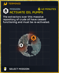
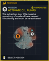

启动油泵
“这里储存着大量原油，但采油机已停止运转，需重新启动。
— 任务 and 目标 简报
Activate Oil Pumps is a 任务 目标 in 绝地潜兵 2. The 目标 建筑 contains 爆炸 Barrels, 弹药箱, Samples, SEAF Communications Device，以及 Vending Machines.
目标 Steps
启动油泵
- 启动终端
- 绝地潜兵 must interact with the 终端
- 登录终端
- 绝地潜兵 must interact with the 终端 if not already, and input the 7-方向 code shown on the screen
- Redirect oil to 传输 车站
- 绝地潜兵 must interact with the 终端 if not already and use the 方向 buttons to move pipes in a pipe puzzle until oil Outflow connects with 传输 车站 instead of Local 存储, and then wait 2 秒.
- 按照终端的提示，调整所有阀门
- 绝地潜兵 must interact with all 3 valves scattered across the entire area
- If a valve is gunked up, it needs to be shot free first
- This gunk cannot be 已移除 with "non-directed"-攻击 such as 电弧伤害 produced with E.G. 弧度-12 Blitzer or 弧度-3 电弧发射器
- 绝地潜兵 trying to free a valve from 终结族 influence should stand clear, else they will be violently flung into the air. 近战 武器 such as CQC-30 Stun Baton have enough reach to safely remove the gunk.
- 绝地潜兵 must interact with the valve, then hold the right 方向 until the 绝地潜兵 has spun the valve counterclockwise twice, and it emits a green 轻型
- Spinning it clockwise twice until it emits a red 轻型 closes the valve instead
- If a valve is gunked up, it needs to be shot free first
- 绝地潜兵 must interact with all 3 valves scattered across the entire area
- 使用终端，重新启动泵机
- 绝地潜兵 must go back to the 终端, interact with it, and then use the up 方向 to 完成 this step
- 油泵正在启动
- 绝地潜兵 must wait for the entire 10 秒 it takes to 完成 this step
- Reward:
 500 申购点 Slips 和
500 申购点 Slips 和  100 经验值
100 经验值
各难度地图

容易难度
中等难度
琐事
- This 任务 was previously named "Activate E-710 Pumps". Its name and 简报 was 已更改 at an 未知 point.
- 上一个 任务 and 目标 简报: "The extractors over this 庞大 repository of E-710 have ceased functioning and must be re-activated."